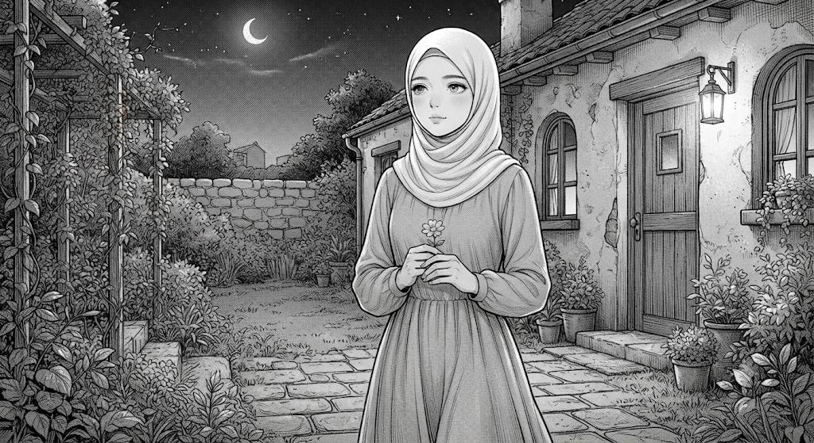
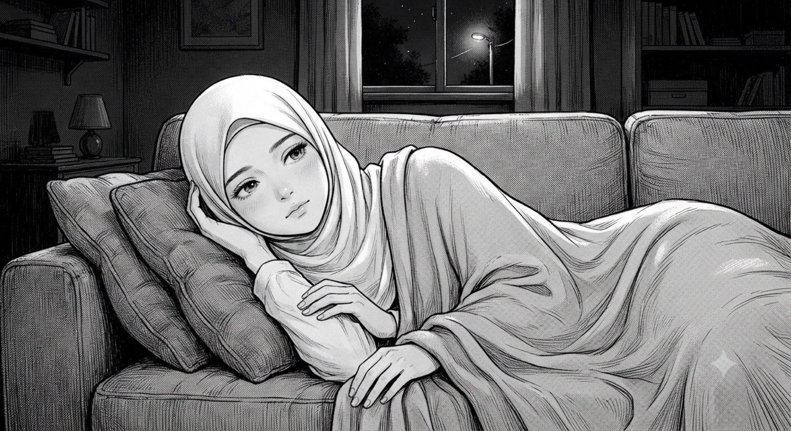
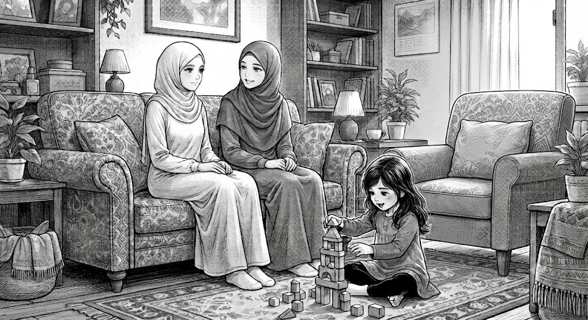
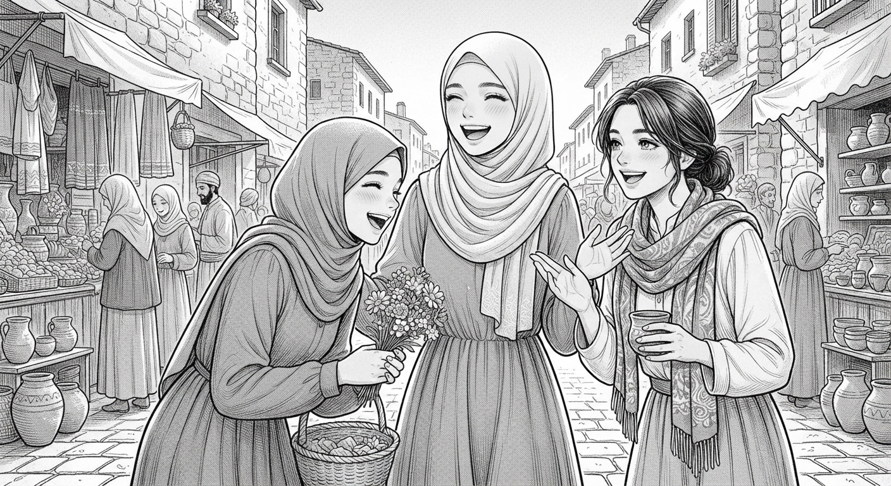

Bir kunning to'rt sahifasi — oy bilan suhbatdan tortib, bozordagi kulgilargacha. Ochib ko'ring.

Ko'cha chiroqlari allaqachon uyquga ketgan, osmon esa keng va sokin edi. Siz boshingizni ko'tarib oyga tikildingiz — u sabrli, hech qachon shoshilmaydigan bir tinglovchidek edi. "Nega dunyo shunday?" — dedingiz ichingizda. "Nega ba'zi savollarning javobi yo'q, nega ba'zi kunlar bunchalik og'ir?" Savollar bir-birining ketidan kelaverdi, ammo javob kelmadi. Shamol yengilgina esib, sochingizni silab o'tdi — xuddi kimdir "hammasi yaxshi bo'ladi" deyayotgandek. Va aynan shu daqiqada angladingiz: ba'zan javob topish shart emas ekan. Ba'zan faqat savol berish, tinglanish, va tunning sirli sukunatida o'zingiz bilan yolg'iz qolish ham yetarli ekan. Oy sizga jilmayganday tuyuldi — go'yo ming yillar davomida boshqalarning ham xuddi shunday savollarini tinglagan va hech qachon zerikmagan. Chuqur nafas oldingiz, yulduzlar esa xuddi siz uchun yonayotgandek porladi. Va o'sha kecha lablaringizda sekin, iliq bir tabassum paydo bo'ldi — chunki endi o'zingizni yolg'iz his qilmadingiz, go'yo butun osmon sizni quchoqlagandek edi.

Ko'chadan qaytib, yumshoq to'shagingizga cho'zildingiz. Tanangiz charchagan edi, lekin xayolingiz hamon tinmasdi — kunning har bir lahzasi, har bir kulgi, har bir gap ko'z oldingizdan qayta-qayta o'tardi. Ko'zlaringizni yumdingiz, ammo uyqu kelavermadi. Shunda, kutilmaganda, eng yorqin xotiralar bittalab kela boshladi: onangizning mehr to'la ovozi, jiyaningizning sharaqlab kulishi, do'stlaringizning beg'ubor hazillari. Har bir xotira xuddi issiq bir piyola choydek, ichingizni asta-asta isitib bordi. O'sha zahoti angladingiz — hayot og'ir savollardan iborat bo'lishi mumkin, ammo shu bilan birga sizni sevadigan odamlarning iliqligi ham bor, va bu iliqlik hech qachon sizni tark etmaydi. Bu tuyg'u yostiqqa singib, ko'z qovoqlaringizni sekin-asta og'irlashtirdi. Nihoyat, bugungi tashvishlar bir-bir orqaga chekindi, yurak esa xotirjamlik va shukronalikka to'ldi. Lablaringizda allaqachon mayin bir tabassum bor edi — xayolingizda yaqinlaringiz bilan birga edingiz, va bu qalbingiz uchun butun dunyodan ham qimmatliroq edi. Shu tabassum bilan asta uyquga ketdingiz, go'yo ertangi kun sizga yangi bir mo''jiza va'da qilayotgandek.

Ertasi kuni siz opangiznikiga yo'l oldingiz. Eshikni ochib kirishingiz bilanoq, kichkina jiyaningiz quvonchdan sakrab oldingizga yugurib keldi, qo'lida rang-barang o'yinchoqlari bilan. "Xola keldi!" — deb baqirib yubordi bola, va butun uy bir zumda kulgu va shodlikka to'ldi. Opangiz bilan divanga yonma-yon o'tirdingiz, choy damlandi, gaplar esa hech tugamadi — orzular haqida, kichik-kichik quvonchlar haqida, yurakning eng nozik burchaklarida yashiringan tuyg'ular haqida. Shu orada jiyaningiz oyoqlaringiz yonida o'zining kichkina, ajoyib dunyosini qurardi, tinimsiz savollar yog'dirardi: "Xola, bu nima? Buni nega bunday deydilar?" Yuragingiz iliqlikka to'lib-toshdi — bu shunchaki oddiy kun emas, balki hayotning eng qimmatli, eng shirin lahzalaridan biri edi. Opangizning yumshoq kulgisi, jiyaningizning begunoh, jarangdor ovozi, choyning issiq bug'i — hammasi birlashib, sizga bir haqiqatni his qildirdi: qayerga borsangiz ham, qanchalik uzoqda yursangiz ham, ildizlaringiz va oilangiz doim shu yerda, ochiq quchoq bilan sizni kutib turadi. Ko'zlaringizga beixtiyor yosh yig'ildi, tomog'ingiz achishdi — ammo bu og'riq emas edi, bu to'lib-toshgan, iliq baxtning yoshi edi, va siz o'zingiz sezmagan holda jilmayib yubordingiz.

Kunning oxirida do'stlaringiz bilan bozorga chiqdingiz. Rang-barang patnislar, sotuvchilarning quvnoq ovozi, hidlar aralashgan iliq havo — hammasi bayramona bir kayfiyat yaratardi. Har bir do'kon oldida to'xtab, kulgidan ich ketguncha hazillashdingiz, arzon-garov, yorqin taqinchoqlarni sinab ko'rdingiz, va hech narsaga arzimaydigan mayda gaplardan to'satdan baxtli bo'lib qoldingiz. Bir payt do'stlaringizdan biri kulib shunday dedi: "Qarang, siz oxirgi marta qachon shunchalik erkin kulgan edingiz?" Bir zum jim qoldingiz — va tushundingizki, chindan ham ancha vaqtdan beri shunday sodda, beg'ubor xursandchilikni his qilmagan ekansiz. Quyosh sekin-asta botayotgan mahal, do'stlaringizning quvnoq kulgilari, iliq shabada va shirin-shirin hidlar orasida, ko'zlaringizga to'satdan yosh keldi — lekin bu safar g'am yoshi emas edi, bu baxtdan to'lib-toshgan, hayajondan titrayotgan yurakning yoshi edi. Kulib turib, ayni damda yig'lab ham yubordingiz, va aynan shu qarama-qarshi tuyg'ular ichida tushundingiz: baxt har doim katta voqealarda emas — u ba'zan shunchaki, quyosh nurida, yaqin do'stlar bilan bozorda kulgan bir kunning ichiga yashiringan bo'ladi. Va bugun, aynan shu lahzada, siz haqiqatan ham, to'liq va cheksiz baxtli edingiz.
Bu kitob — sizning kunlaringiz,
tunlaringiz, savollaringiz
va kulgilaringiz uchun.
Yulduzlar ostida ham,
oilangiz bag'rida ham,
do'stlaringiz orasida ham —
tabassumingiz doim shunday
yorqin bo'lib qolsin.